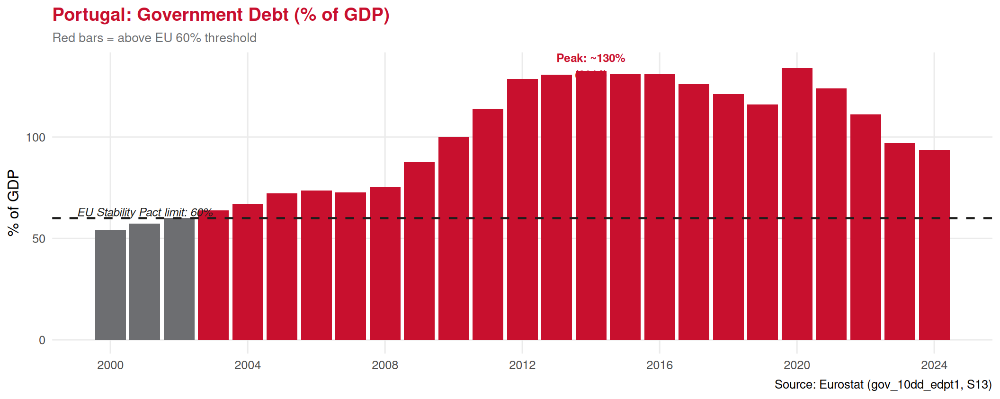

Fiscal Policy
Lecture 25: Expansionary and Contractionary Fiscal Policies
Paulo Fagandini
2026
Recap: Monetary Policy ⏪
Last lecture we studied monetary policy — the Central Bank’s lever:
✅ Expansionary: cut rates → cheaper credit → more spending → boost GDP
✅ Contractionary: raise rates → expensive credit → less spending → reduce inflation
✅ Portugal cannot set its own rates — the ECB decides for the whole Eurozone
👉 Today: the government’s lever — fiscal policy
Taxes and public spending are the tools. Unlike monetary policy, each government controls its own fiscal policy — even within the Eurozone.
Part I: What is Fiscal Policy?
The Definition 🏛️
Fiscal policy refers to the government’s decisions about tax collection and public spending to influence the level of economic activity, employment, and inflation.
\[\text{Budget Balance} = \text{Government Revenue (T)} - \text{Government Spending (G)}\]
Budget surplus: \(T > G\)
Government collects more than it spends. Can pay down debt or save.
Budget deficit: \(T < G\)
Government spends more than it collects. Must borrow — adds to public debt.
Balanced budget: \(T = G\)
Revenue exactly covers spending.
Why does the government use fiscal policy?
1️⃣ Stabilisation — smooth out the business cycle (fight recessions and overheating)
2️⃣ Redistribution — taxes and transfers reduce inequality
3️⃣ Allocation — provide public goods (roads, education, defence) the market won’t supply
4️⃣ Long-run growth — invest in infrastructure, R&D, human capital
Fiscal Policy vs Monetary Policy ⚖️
| 🏦 Monetary Policy | 🏛️ Fiscal Policy | |
|---|---|---|
| Controlled by | Central Bank (ECB for Portugal) | National government |
| Tools | Interest rates, money supply, QE | Taxes, public spending, transfers |
| Speed of decision | Fast (ECB meets every 6 weeks) | Slow (parliament must approve budgets) |
| Speed of effect | 12–18 month lag | Can be faster (direct spending) |
| Portugal’s autonomy | None — ECB decides | Full — Portugal’s own budget |
| Main risk | Inflation (if expansionary excess) | Budget deficit / public debt |
💡 Because Portugal gave up monetary policy to the ECB, fiscal policy is Portugal’s primary stabilisation tool — making the government’s budget decisions especially consequential.
Part II: The Two Directions
Expansionary Fiscal Policy 📈
Expansionary fiscal policy: used when the economy is in recession or slow growth.
The government increases public spending and/or reduces taxes to stimulate economic activity.
Tools:
💰 Tax cuts — more disposable income for households and firms
🏫 Increase public spending — hire workers, build infrastructure, fund services
🤝 Transfer payments — raise unemployment benefits, pensions, subsidies
Goal: raise aggregate demand (\(C + I + G + NX\)) to restore growth and employment
The risk:
⚠️ Higher spending or lower taxes → budget deficit increases
📊 Sustained deficits → public debt accumulates
🔥 If overdone during recovery → can fuel inflation
🇪🇺 EU fiscal rules (Stability and Growth Pact): deficits should stay below 3% of GDP; debt below 60% of GDP
👉 Portugal has been under EU fiscal surveillance multiple times for breaching these limits.
The Multiplier Effect 📢
One of the most important concepts in fiscal policy:
The fiscal multiplier measures how much GDP changes for each euro of government spending (or tax change). If the multiplier > 1, the initial stimulus has a larger-than-proportional effect on output.
Why does it work?
Contractionary Fiscal Policy 📉
Contractionary fiscal policy: used when the economy faces high inflation or unsustainable growth (or when public debt is too high).
The government reduces public spending and/or raises taxes.
Tools:
⬆️ Raise taxes — less disposable income for households and firms
✂️ Cut public spending — reduce government payrolls, investment, transfers
Goal: reduce aggregate demand to cool inflation and/or restore fiscal sustainability
Also used for fiscal consolidation:
When public debt is dangerously high (as in Portugal 2011–2014), contractionary fiscal policy is imposed to restore creditor confidence — even in a recession.
The risk:
📉 Reduced spending → slower GDP growth
💼 Less demand → higher unemployment
💢 Austerity measures → social and political tensions
🇵🇹 Portugal 2011–2014:
The Troika (EU, ECB, IMF) imposed severe contractionary fiscal policy in exchange for a €78bn bailout. GDP fell ~7% cumulatively; unemployment peaked at ~17%.
👉 One of the starkest real-world examples of contractionary fiscal policy and its consequences.
Side-by-Side Comparison ⚖️
| 📈 Expansionary | 📉 Contractionary | |
|---|---|---|
| When used | Recession, high unemployment | High inflation, debt crisis, overheating |
| Spending | ⬆️ Increase | ⬇️ Cut |
| Taxes | ⬇️ Cut | ⬆️ Raise |
| Effect on AD | ⬆️ Rises | ⬇️ Falls |
| Effect on GDP | ⬆️ Grows | ⬇️ Slows |
| Effect on inflation | ⬆️ Risk rises | ⬇️ Falls |
| Effect on employment | ⬆️ Improves | ⬇️ May worsen |
| Effect on deficit | ⬇️ Deficit widens | ⬆️ Deficit narrows |
Part III: Portugal’s Fiscal Reality
Government Revenue and Spending 🇵🇹

Portugal’s Public Debt 📊

👉 Portugal’s debt exceeded 130% of GDP at its 2014 peak — nearly double the EU limit. Reducing it required sustained contractionary fiscal policy.
Part IV: Automatic Stabilisers
Built-in Fiscal Cushions
Not all fiscal policy is deliberate. Some spending and tax rules act automatically to stabilise the economy — without any new political decision.
Automatic stabilisers are features of the tax and spending system that automatically reduce fiscal drag during recessions and reduce stimulus during booms — without requiring new legislation.
⬇️ In a recession:
- Tax revenues fall automatically (lower incomes → less income tax, VAT)
- Unemployment benefits rise automatically (more people claim)
- 👉 Government deficit widens — automatically providing stimulus
⬆️ In a boom:
- Tax revenues rise automatically (higher incomes → more tax)
- Unemployment benefits fall automatically (fewer claimants)
- 👉 Government surplus grows — automatically cooling the economy
Why do automatic stabilisers matter for tourism?
🏨 During a recession, if the government did nothing: - Unemployed workers would cut spending sharply - Tourism demand would collapse further
🤝 Unemployment benefits act as a floor on consumption: - Workers who lose tourism sector jobs still have some income - Their spending — including on domestic holidays — is partially maintained
👉 The strength of automatic stabilisers partly explains why Scandinavian countries with generous welfare systems suffer smaller output drops in recessions.
Part V: Fiscal Policy and Tourism
Tourist Taxes — Fiscal Policy in Action 🏖️
Tourist taxes are a form of fiscal policy specifically targeting the tourism sector:
How they work:
🌇 Cities impose a per-night levy on overnight stays (e.g. €2/night in Lisbon)
💰 Revenue goes to municipal budgets — fund local services, infrastructure, culture
📊 Acts as a Pigouvian tax — prices in the externalities of overtourism (congestion, noise, waste)
Examples:
| City | Tax per night |
|---|---|
| Lisbon 🇵🇹 | €2.00 |
| Amsterdam 🇳🇱 | 12.5% of room rate |
| Venice 🇮🇹 | €1–5 (day visitors) |
| Barcelona 🇪🇸 | €3.25–4.50 |
The trade-off — the Laffer Curve for tourism:
Tourism Subsidies — Expansionary Fiscal Policy ✈️
Governments can also use expansionary fiscal tools to stimulate tourism:
💰 Direct subsidies to the sector:
- Grants for hotel renovation (EU structural funds)
- Co-financing of tourism infrastructure (airports, roads to coastal areas)
- Support for national tourism promotion (Turismo de Portugal)
👪 Demand-side stimulus:
- Vouchers for domestic tourism (Portugal’s “IRS Jovem” and similar schemes)
- VAT reductions on restaurant/hotel services
- Cultural vouchers (concerts, museums) — indirect tourism support
COVID-19 — Fiscal policy saved tourism:
😷 In 2020, tourism in Portugal essentially stopped (−68% overnight stays)
Government response:
- “Layoff simplificado” — state covered 2/3 of salaries of retained workers
- Moratoria on hotel loan repayments
- Direct grants to small tourism businesses
- EU “Next Generation” recovery funds channelled into tourism infrastructure
👉 Without this massive expansionary fiscal response, the sector would have faced permanent capacity destruction — firms closing, workers leaving permanently.
Fiscal Policy Coordination in the EU 🇪🇺
Within the EU, fiscal policy faces two constraints:
1️⃣ Stability and Growth Pact: - Deficit ≤ 3% of GDP - Debt ≤ 60% of GDP (or declining toward it) - Excessive Deficit Procedure (EDP) if breached
2️⃣ No mutual bail-out rule: - EU member states cannot expect other members to cover their debts - Each country bears the consequences of its own fiscal decisions
The tension:
During a severe recession, these rules may prevent the expansionary policy that is needed.
The Pact was suspended during COVID (2020–2021) — a rare recognition that rigid rules can be counterproductive.

Exercises
📝 Exercise 1 — Multiple Choice
In 2020, the Portuguese government significantly increased unemployment benefits and provided direct grants to tourism businesses affected by COVID-19 lockdowns. At the same time, tax revenues fell sharply as economic activity collapsed. Which statement best describes this fiscal situation?
(A) Contractionary fiscal policy — the government was reducing spending to balance the budget
(B) Expansionary fiscal policy, partly discretionary (grants) and partly automatic stabilisers (benefit claims rising, tax revenues falling)
(C) Neutral fiscal policy — the government was not actively intervening in the economy
(D) Monetary policy — since the ECB was also cutting rates at the same time
Correct answer: (B)
The grants were discretionary expansionary fiscal policy — a deliberate government decision. The automatic rise in unemployment claims and fall in tax revenue were automatic stabilisers — built-in responses requiring no new decision. Together they represent a strongly expansionary fiscal stance. Option D is wrong: monetary policy is the ECB’s tool (interest rates), not the government’s.
📝 Exercise 2 — Multiple Choice
Lisbon’s city council is considering raising the tourist tax from €2 to €5 per night to fund a new tram line. A local hotel association warns this will reduce overnight stays. Which economic concept best describes the trade-off the council is navigating?
(A) The Phillips Curve — the trade-off between inflation and unemployment
(B) The Laffer Curve — beyond a certain tax rate, higher rates reduce total revenue because they suppress the taxable activity
(C) The multiplier effect — a €3 tax increase will reduce GDP by more than €3
(D) The impossible trinity — the city cannot simultaneously maintain tourism, raise revenue, and keep taxes low
Correct answer: (B)
The Laffer Curve captures exactly this trade-off: a tax that is too high can reduce the taxable base (overnight stays) so much that total revenue actually falls. The council must find the revenue-maximising rate — where the gain per visitor is not outweighed by the loss in visitor numbers. Option A is about monetary policy. Option C describes the multiplier (a different mechanism). Option D misapplies the impossible trinity, which applies to exchange rates and monetary policy.
📝 Exercise 3 — Open Question
Portugal entered a severe recession in 2011. GDP fell, unemployment rose to 17%, and the government ran a deficit of over 10% of GDP. Under pressure from the EU, ECB, and IMF (the Troika), Portugal implemented a programme of contractionary fiscal policy: raising taxes (VAT from 21% to 23%, income tax surcharges) and cutting public spending (wages, pensions, social transfers).
(a) Explain, using the concepts of aggregate demand and the multiplier, how this contractionary fiscal policy was expected to affect the economy. (3 marks)
(b) Identify two specific channels through which these austerity measures would affect Portugal’s tourism sector. (4 marks)
(c) Despite the pain of austerity, Portugal successfully exited its bailout programme in 2014 and achieved a budget surplus by 2019. Explain the fiscal policy classification of this surplus and what it implies for the government’s fiscal space. (3 marks)
Solution
(a) Contractionary fiscal policy reduces aggregate demand through two channels. First, tax increases reduce households’ disposable income, lowering consumption (C falls in Y = C+I+G+NX). Second, government spending cuts reduce G directly. Via the multiplier, the initial fall in spending ripples through the economy — each euro cut triggers further reductions as workers and firms who lose income also spend less. The overall contraction in GDP exceeds the initial fiscal tightening. The goal was to reduce the deficit and restore market confidence in Portugal’s debt sustainability, at the cost of short-term output and employment.
(b) Two channels: (1) Domestic tourism demand falls — VAT increases and income tax surcharges reduce Portuguese households’ disposable income, making domestic holidays less affordable; higher restaurant VAT directly raises tourism service prices. (2) Supply-side pressure — cuts to public wages reduce incomes in the hospitality sector workforce; cuts to infrastructure spending slow tourism-related investment; uncertainty about the economic outlook deters hotel investment and renovation.
(c) A budget surplus (\(T > G\)) represents contractionary fiscal policy in terms of its net fiscal stance — the government is withdrawing more from the economy in taxes than it injects in spending. Achieving a surplus is an important milestone: it means Portugal can begin reducing its public debt stock (rather than just stabilising it), which lowers the debt-to-GDP ratio over time. It also rebuilds fiscal space — the government’s capacity to run deficits in future recessions without triggering a debt crisis. This was precisely the fiscal space Portugal used to respond to COVID-19 in 2020.
Summary 📚
Today we covered:
✅ Fiscal policy = government’s decisions on taxes and spending; Portugal controls this independently
✅ Budget balance: surplus (\(T>G\)), deficit (\(T<G\)), balanced (\(T=G\))
✅ Expansionary: raise G / cut T → stimulate AD → fight recession (risk: deficit/debt)
✅ Contractionary: cut G / raise T → reduce AD → fight inflation or debt (risk: recession)
✅ Multiplier effect — government spending has an amplified impact on GDP
✅ Automatic stabilisers — built-in recession buffers (unemployment benefits, tax cycles)
✅ Tourist taxes and the Laffer Curve — fiscal tools specifically shaping tourism demand
✅ Portugal’s fiscal history: Troika austerity (2011–2014) → recovery → surplus (2019) → COVID stimulus (2020)
Next lecture (Lecture 26 — last lecture!):
🌐 The Current Account and the Balance of Payments — how international transactions are recorded
Thank You! 👋
Questions?
📧 paulo.fagandini@ext.universidadeeuropeia.pt
Next class: Thursday, May 22nd, 2026

Economics of Tourism | Lecture 25